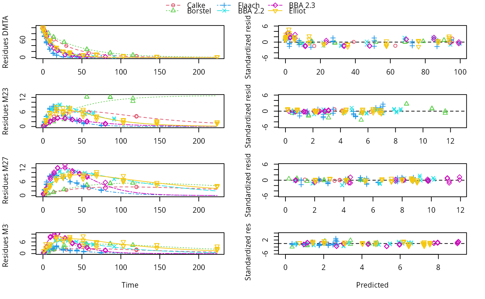
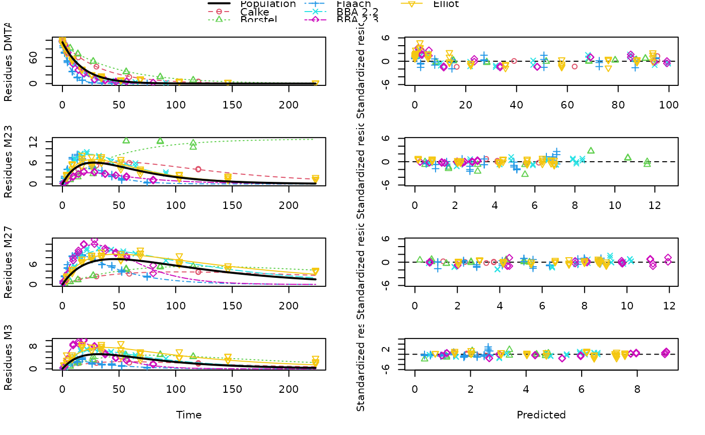

R/dimethenamid_2018.R
dimethenamid_2018.RdThe datasets were extracted from the active substance evaluation dossier published by EFSA. Kinetic evaluations shown for these datasets are intended to illustrate and advance kinetic modelling. The fact that these data and some results are shown here does not imply a license to use them in the context of pesticide registrations, as the use of the data may be constrained by data protection regulations.
dimethenamid_2018An mkindsg object grouping seven datasets with some meta information
Rapporteur Member State Germany, Co-Rapporteur Member State Bulgaria (2018) Renewal Assessment Report Dimethenamid-P Volume 3 - B.8 Environmental fate and behaviour Rev. 2 - November 2017 https://open.efsa.europa.eu/study-inventory/EFSA-Q-2014-00716
The R code used to create this data object is installed with this package in the 'dataset_generation' directory. In the code, page numbers are given for specific pieces of information in the comments.
print(dimethenamid_2018)
#> <mkindsg> holding 7 mkinds objects
#> Title $title: Aerobic soil degradation data on dimethenamid-P from the EU assessment in 2018
#> Occurrence of observed compounds $observed_n:
#> DMTAP M23 M27 M31 DMTA
#> 3 7 7 7 4
#> Time normalisation factors $f_time_norm:
#> [1] 1.0000000 0.9706477 1.2284784 1.2284784 0.6233856 0.7678922 0.6733938
#> Meta information $meta:
#> study usda_soil_type study_moisture_ref_type rel_moisture
#> Calke Unsworth 2014 Sandy loam pF2 1.00
#> Borstel Staudenmaier 2009 Sand pF1 0.50
#> Elliot 1 Wendt 1997 Clay loam pF2.5 0.75
#> Elliot 2 Wendt 1997 Clay loam pF2.5 0.75
#> Flaach König 1996 Sandy clay loam pF1 0.40
#> BBA 2.2 König 1995 Loamy sand pF1 0.40
#> BBA 2.3 König 1995 Sandy loam pF1 0.40
#> study_ref_moisture temperature
#> Calke NA 20
#> Borstel 23.00 20
#> Elliot 1 33.37 23
#> Elliot 2 33.37 23
#> Flaach NA 20
#> BBA 2.2 NA 20
#> BBA 2.3 NA 20
dmta_ds <- lapply(1:7, function(i) {
ds_i <- dimethenamid_2018$ds[[i]]$data
ds_i[ds_i$name == "DMTAP", "name"] <- "DMTA"
ds_i$time <- ds_i$time * dimethenamid_2018$f_time_norm[i]
ds_i
})
names(dmta_ds) <- sapply(dimethenamid_2018$ds, function(ds) ds$title)
dmta_ds[["Elliot"]] <- rbind(dmta_ds[["Elliot 1"]], dmta_ds[["Elliot 2"]])
dmta_ds[["Elliot 1"]] <- NULL
dmta_ds[["Elliot 2"]] <- NULL
# \dontrun{
# We don't use DFOP for the parent compound, as this gives numerical
# instabilities in the fits
sfo_sfo3p <- mkinmod(
DMTA = mkinsub("SFO", c("M23", "M27", "M31")),
M23 = mkinsub("SFO"),
M27 = mkinsub("SFO"),
M31 = mkinsub("SFO", "M27", sink = FALSE),
quiet = TRUE
)
dmta_sfo_sfo3p_tc <- mmkin(list("SFO-SFO3+" = sfo_sfo3p),
dmta_ds, error_model = "tc", quiet = TRUE)
print(dmta_sfo_sfo3p_tc)
#> <mmkin> object
#> Status of individual fits:
#>
#> dataset
#> model Calke Borstel Flaach BBA 2.2 BBA 2.3 Elliot
#> SFO-SFO3+ OK OK OK OK OK OK
#>
#> OK: No warnings
# The default (test_log_parms = FALSE) gives an undue
# influence of ill-defined rate constants that have
# extremely small values:
plot(mixed(dmta_sfo_sfo3p_tc), test_log_parms = FALSE)

# If we disregards ill-defined rate constants, the results
# look more plausible, but the truth is likely to be in
# between these variants
plot(mixed(dmta_sfo_sfo3p_tc), test_log_parms = TRUE)

# We can also specify a default value for the failing
# log parameters, to mimic FOCUS guidance
plot(mixed(dmta_sfo_sfo3p_tc), test_log_parms = TRUE,
default_log_parms = log(2)/1000)
# As these attempts are not satisfying, we use nonlinear mixed-effects models
# f_dmta_nlme_tc <- nlme(dmta_sfo_sfo3p_tc)
# nlme reaches maxIter = 50 without convergence
f_dmta_saem_tc <- saem(dmta_sfo_sfo3p_tc)
# I am commenting out the convergence plot as rendering them
# with pkgdown fails (at least without further tweaks to the
# graphics device used)
#saemix::plot(f_dmta_saem_tc$so, plot.type = "convergence")
summary(f_dmta_saem_tc)
#> saemix version used for fitting: 3.0
#> mkin version used for pre-fitting: 1.1.0
#> R version used for fitting: 4.2.0
#> Date of fit: Wed May 18 20:37:14 2022
#> Date of summary: Wed May 18 20:37:14 2022
#>
#> Equations:
#> d_DMTA/dt = - k_DMTA * DMTA
#> d_M23/dt = + f_DMTA_to_M23 * k_DMTA * DMTA - k_M23 * M23
#> d_M27/dt = + f_DMTA_to_M27 * k_DMTA * DMTA - k_M27 * M27 + k_M31 * M31
#> d_M31/dt = + f_DMTA_to_M31 * k_DMTA * DMTA - k_M31 * M31
#>
#> Data:
#> 563 observations of 4 variable(s) grouped in 6 datasets
#>
#> Model predictions using solution type deSolve
#>
#> Fitted in 1660.941 s
#> Using 300, 100 iterations and 9 chains
#>
#> Variance model: Two-component variance function
#>
#> Mean of starting values for individual parameters:
#> DMTA_0 log_k_DMTA log_k_M23 log_k_M27 log_k_M31 f_DMTA_ilr_1
#> 95.5662 -2.9048 -3.8130 -4.1600 -4.1486 0.1341
#> f_DMTA_ilr_2 f_DMTA_ilr_3
#> 0.1385 -1.6700
#>
#> Fixed degradation parameter values:
#> None
#>
#> Results:
#>
#> Likelihood computed by importance sampling
#> AIC BIC logLik
#> 2276 2272 -1120
#>
#> Optimised parameters:
#> est. lower upper
#> DMTA_0 88.3098 84.1383 92.4813
#> log_k_DMTA -3.0510 -3.5659 -2.5361
#> log_k_M23 -4.0567 -4.9178 -3.1955
#> log_k_M27 -3.8592 -4.2571 -3.4614
#> log_k_M31 -3.9685 -4.4683 -3.4686
#> f_DMTA_ilr_1 0.1382 -0.2120 0.4885
#> f_DMTA_ilr_2 0.1429 -0.2616 0.5473
#> f_DMTA_ilr_3 -1.3889 -1.6943 -1.0836
#>
#> Correlation:
#> DMTA_0 l__DMTA lg__M23 lg__M27 lg__M31 f_DMTA__1 f_DMTA__2
#> log_k_DMTA 0.0315
#> log_k_M23 -0.0237 -0.0031
#> log_k_M27 -0.0392 -0.0048 0.0040
#> log_k_M31 -0.0257 -0.0032 0.0022 0.0821
#> f_DMTA_ilr_1 -0.0048 -0.0007 0.0415 -0.0435 0.0333
#> f_DMTA_ilr_2 -0.0007 -0.0002 0.0214 -0.0270 -0.0900 -0.0372
#> f_DMTA_ilr_3 -0.1861 -0.0136 0.0431 0.0797 0.0382 -0.0072 0.0066
#>
#> Random effects:
#> est. lower upper
#> SD.DMTA_0 3.2733 -1.1098 7.6564
#> SD.log_k_DMTA 0.6422 0.2777 1.0066
#> SD.log_k_M23 1.0131 0.3797 1.6465
#> SD.log_k_M27 0.4511 0.1510 0.7513
#> SD.log_k_M31 0.5695 0.1923 0.9466
#> SD.f_DMTA_ilr_1 0.4123 0.1526 0.6720
#> SD.f_DMTA_ilr_2 0.4780 0.1804 0.7757
#> SD.f_DMTA_ilr_3 0.3559 0.1344 0.5775
#>
#> Variance model:
#> est. lower upper
#> a.1 0.9255 0.8288 1.0221
#> b.1 0.1365 0.1191 0.1538
#>
#> Backtransformed parameters:
#> est. lower upper
#> DMTA_0 88.30980 84.138334 92.48126
#> k_DMTA 0.04731 0.028272 0.07918
#> k_M23 0.01731 0.007315 0.04095
#> k_M27 0.02108 0.014164 0.03139
#> k_M31 0.01890 0.011467 0.03116
#> f_DMTA_to_M23 0.14626 NA NA
#> f_DMTA_to_M27 0.12029 NA NA
#> f_DMTA_to_M31 0.11135 NA NA
#>
#> Resulting formation fractions:
#> ff
#> DMTA_M23 0.1463
#> DMTA_M27 0.1203
#> DMTA_M31 0.1113
#> DMTA_sink 0.6221
#>
#> Estimated disappearance times:
#> DT50 DT90
#> DMTA 14.65 48.67
#> M23 40.05 133.05
#> M27 32.88 109.21
#> M31 36.67 121.81
# As the confidence interval for the random effects of DMTA_0
# includes zero, we could try an alternative model without
# such random effects
# f_dmta_saem_tc_2 <- saem(dmta_sfo_sfo3p_tc,
# covariance.model = diag(c(0, rep(1, 7))))
# saemix::plot(f_dmta_saem_tc_2$so, plot.type = "convergence")
# This does not perform better judged by AIC and BIC
# saemix::compare.saemix(f_dmta_saem_tc$so, f_dmta_saem_tc_2$so)
# }